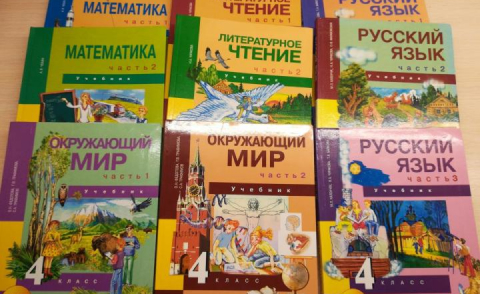
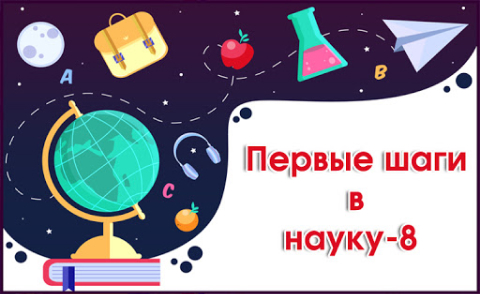

Обо мне
Здравствуйте, я Исаева Ольга Петровна – учитель начальных классов в МБОУ лицей №20 г. Пятигорска Ставропольского края. Добро пожаловать на мой персональный сайт.
Образование
В 2006 году поступила в Железноводский педагогический колледж по специальности преподавание в начальных классах с дополнительной подготовкой в области физической культуры.
В 2009 году поступила в Пятигорский Государственный Лингвистический Университет по специальности русский язык и литература, учитель русского языка и литературы.
Работа
С 2006 года и до сегодняшнего дня работаю в МБОУ лицей №20.
Моё кредо
Учитель будущего – это прежде всего человек мобильный, способный взаимодейстовать с образовательными учреждениями разного уровня, готовый свои фундаментальные знания постоянно дополнять сопутствующими, но особо востребованными, что будет способствовать достижению педагогического успеха, а значит сделает успешными тех, с кем учитель делится своими знаниями.
Обучение в педагогическом колледже
В 2006 г. поступила в педагогический колледж г. Железноводск по специальности преподавание в начальных классах с дополнительной подготовкой в области физической культуры.
Поступление в Пятигорский Государственный Лингвистический Университет
В 2009 году поступила в ПГЛУ по специальности русский язык и литература, учитель русского языка и литературы.
Работа в МБОУ лицее №20 города Пятигорска
Начала работать в МБОУ лицее №20 города Пятигорска.
Из опыта работы по программе «ПНШ»
С 1 сентября 2010 года я начала работать по учебникам комплекта «Перспективная начальная школа». Эта программа разработана в соответствии с принципами развивающего обучения, которые сочетаются с традиционными принципами прочности, доступности, осознанности и наглядности в обучении. Учебники оформлены таким образом, что сразу привлекают внимание не только детей, но и взрослых. Наличие большого количества иллюстраций привлекает внимание, позволяет включиться в действие внешней интриги, дети проживают жизненные моменты совместно с героями, сопереживают и помогают им, иллюстрации помогают решить определенные дидактические задачи. Родители отмечают, что даже им интересны сами учебники и задания в них.
Весь текстовый файлВыступление «В науку первые шаги»
Организация работы с одаренными детьми очень актуальна в наше время. Одна из главных потребностей общества сегодня – это формирование неординарной личности. Любому государству нужны одаренные люди, т.к. именно они способны внести значительный вклад в развитие современного социума. А задача общества состоит в том, чтобы рассмотреть и развить способности всех его представителей. К большому сожалению, далеко не каждый ребенок реализует свои способности без помощи извне. Поэтому сегодня выявление, обучение и воспитание одаренных детей - одна их главных задач образовательной деятельности учителя. Сегодня такая задача учителем решается как в урочной деятельности, так на внеурочных занятиях.
Весь текстовый файлПочетная грамота
От UCHI.RU по программе «Активный учитель» по итогам сентября 2019 года.
Благодарственное письмо
От UCHI.RU за выступление учеников на олмпиаде по математике в ноябре 2017 года.
Благодарственное письмо
От UCHI.RU за помощь в проведении олимпиады «BRICSBath» в сентябре 2017 года.
Благодарственное письмо
От UCHI.RU за помощь в проведении «Дино-олимпиады» в сентябре 2017 года.
Благодарственное письмо
От UCHI.RU за помощь в проведении олимпиады «Русский с Пушкиным» в октябре 2017 года.
Благодарственное письмо
От UCHI.RU за помощь в проведении «Дино-олимпиады» в сентябре 2018 года.
Благодарственное письмо
От UCHI.RU за помощь в проведении олимпиады «Заврики» в октябре 2018 года.
Благодарственное письмо
От UCHI.RU за помощь в проведении олимпиады «Заврики» по английскому языку в ноябре-декабре 2018 года.
Благодарственное письмо
От UCHI.RU за помощь в проведении олимпиады «Заврики» в январе-феврале 2019 года.
Благодарственное письмо
От UCHI.RU за помощь в проведении олимпиады «Заврики» в январе-марте 2019 года.
Благодарственное письмо
От UCHI.RU за помощь в проведении олимпиады «Заврики» по русскому языку в марте-апреле 2019 года.
Благодарственное письмо
От UCHI.RU за помощь в проведении олимпиады «Заврики» в апреле-мае 2019 года.
Благодарственное письмо
От UCHI.RU за помощь в проведении олимпиады «Заврики» по окружающему миру в апреле-мае 2019 года.
Благодарственное письмо
От UCHI.RU за помощь в проведении олимпиады «Заврики» в сентябре 2019 года.
Благодарственное письмо
От UCHI.RU за помощь в проведении олимпиады «Заврики» по русскому языку в октябре 2019 года.
Благодарственное письмо
От UCHI.RU за помощь в проведении олимпиады «Юный предприниматель» в ноябре 2019 года.
Благодарственное письмо
От UCHI.RU за помощь в проведении олимпиады «Заврики» по математике в феврале 2020 года.